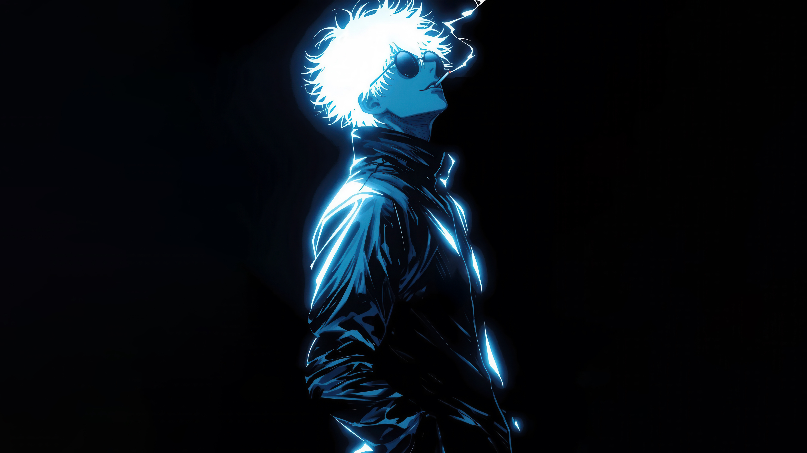
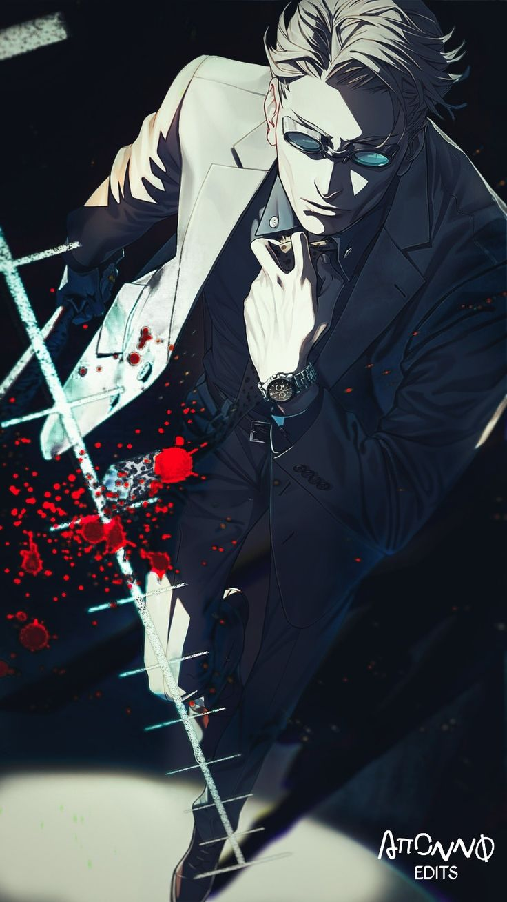
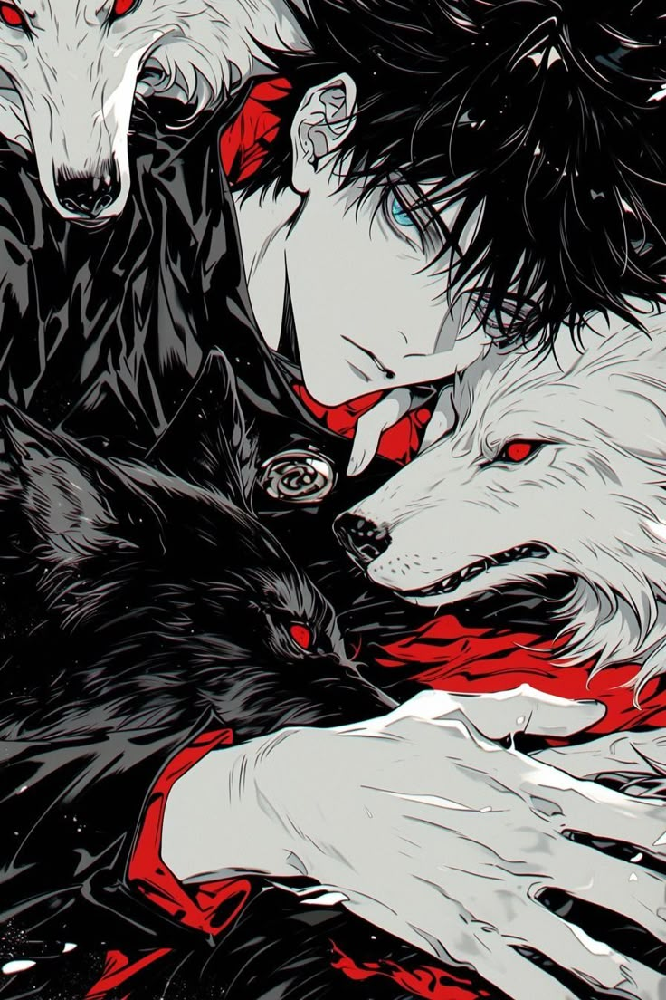
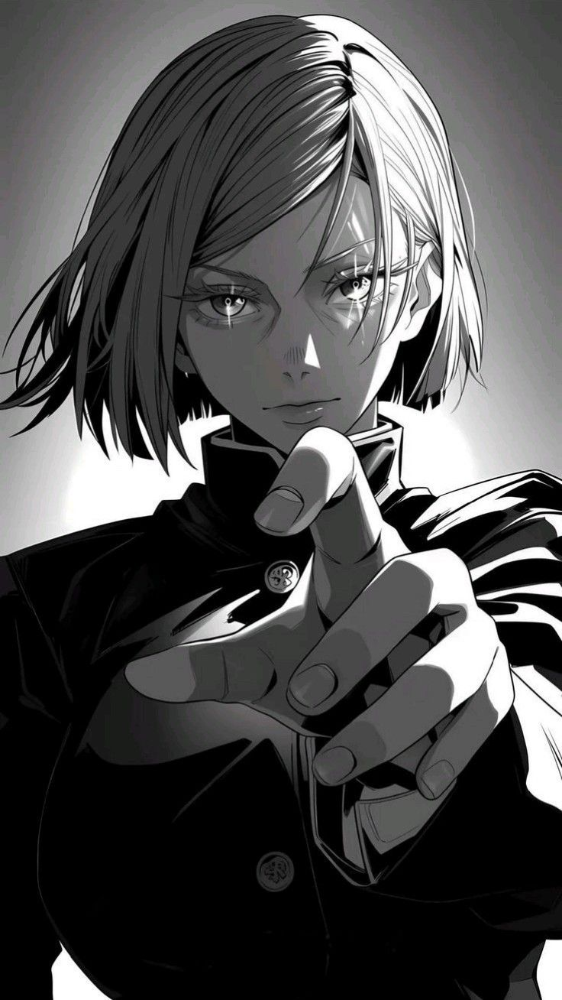

My Fave Characters
五条悟
 Gojo Satoru is widely recognized as the strongest jujutsu sorcerer of the modern era, a title he more than lives up to with his unmatched skill and overwhelming confidence. As a special grade sorcerer, he stands at the top of the hierarchy, often treating even the most dangerous curses as little more than warm-ups. He is the pride of the Gojo Clan, and the first person in over four hundred years to inherit both the Limitless technique and the Six Eyes — two legendary abilities that, when combined, make him virtually unstoppable.
Beyond his raw power, Gojo is known for his eccentric and often playful personality. He has a tendency to irritate his superiors with his carefree attitude, yet his loyalty to his students and his vision for the future of jujutsu society prove he takes his role more seriously than he lets on. Beneath his teasing humor and cocky grin is a man who understands the weight of responsibility — a teacher determined to protect the next generation of sorcerers while dismantling the old, rigid structures that hold them back.
七海建人
 Nanami Kento is a grade 1 jujutsu sorcerer whose calm, methodical nature sets him apart from many of his peers. Once a salaryman who abandoned the world of sorcery in pursuit of a quieter, more stable life, he eventually returned to the battlefield, driven by a sense of duty and the understanding that he could not ignore the suffering caused by curses. His pragmatic outlook and professional demeanor make him a sharp contrast to the reckless energy of younger sorcerers, but also a figure of reliability and guidance to those under his care.
Armed with the Ratio Technique and his signature blunt sword, Nanami approaches combat with precision and calculation, treating every mission with the same seriousness as if it were business. Though he often complains about the exhausting demands of sorcery, his actions reveal an underlying compassion — he values protecting lives, especially his students, above his own comfort. To many, Nanami embodies the rare balance between stoic professionalism and quiet empathy, standing as both mentor and protector in a world overwhelmed by chaos.
伏黒恵
 Fushiguro Megumi is a first-year student at Tokyo Jujutsu High and one of the most promising young sorcerers of his generation. Reserved and serious beyond his years, Megumi often acts as the steady counterbalance to Yuji Itadori’s impulsive energy and Nobara Kugisaki’s fiery confidence. He inherited the Ten Shadows Technique of the Zen’in Clan, granting him the ability to summon and control shikigami — shadow-born creatures that fight alongside him. Though he comes from a prestigious lineage, Megumi distances himself from the toxic pride of his clan, shaping his own path with quiet determination and a strong sense of justice.
What makes Megumi stand out is not just his technique but his perspective on life and death. He is willing to put himself at risk if it means protecting others, even when it conflicts with his own safety or personal comfort. While he appears stoic and aloof, beneath the surface lies a compassionate and conflicted young man, burdened by expectations yet driven by the belief that those who are kind deserve to be saved. His potential as a sorcerer is vast, and many, including Gojo, see him as someone who may one day surpass the current generation.
釘崎野薔薇
 Nobara Kugisaki is a first-year student at Tokyo Jujutsu High whose fiery personality and unshakable confidence make her a force to be reckoned with both on and off the battlefield. Hailing from a small rural town she despised, Nobara left for the city determined to live life on her own terms, refusing to let anyone look down on her or dictate her choices. She wields a unique blend of hammer, nails, and straw-doll techniques that allow her to attack directly or strike through sympathetic connections, turning even mundane objects into deadly weapons.
What truly defines Nobara is her refusal to compromise her identity — she embraces both her strength as a fighter and her pride in being a woman, insisting that she doesn’t need to give up beauty, fashion, or individuality in order to be powerful. Her blunt honesty and fearless attitude often put her at odds with others, yet those same traits inspire respect and loyalty from her peers. Beneath her sharp tongue lies a strong sense of camaraderie and an unyielding will to protect her friends, making Nobara a symbol of resilience and independence in a world consumed by curses.